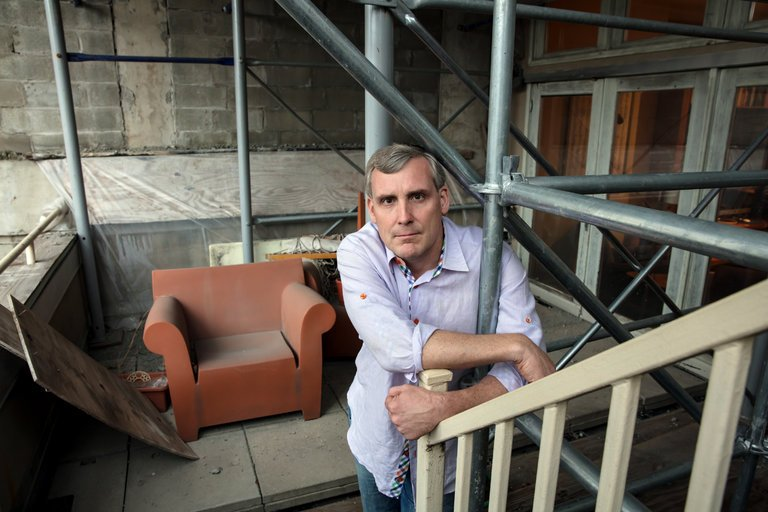
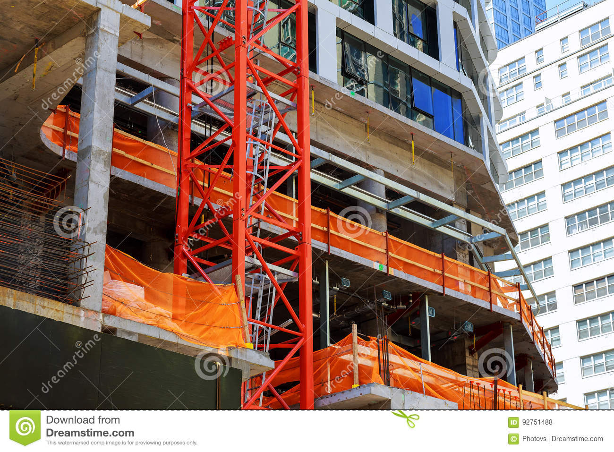

Here are some of the things that have shattered the skylight
of the NoHo apartment owned by Jeffrey and Suzanne Stewart: a hammer,
concrete and a 50-pound slab of wood.
In a saga that has lasted nearly a decade, these objects have fallen
from a construction site next door, damaging the couple’s 20-pane skylight on three separate
occasions. The Stewarts, who live on Great Jones Street with their two children, have found
themselves living a New Yorker’s nightmare: Seemingly endless construction has turned their home
into a miserable place to live
The Terrible Noise
Their apartment, a duplex penthouse with a floating staircase, private roof and
three terraces, is shrouded in scaffolding, damaged by water leaks and has been pelted
with debris. Second Development Services’s project next door began around 2008 as a hotel,
but languished unfinished for years. It will eventually emerge as an 11-story condo
called 22 Bond, which has since 2013 been under development by Second Development Services
and Richport Group.
In a city that never stops building, New Yorkers have become hardened to some of the
inconveniences. We expect the jackhammers, the sidewalk bridges and the cranes. But we also
expect that an eyesore will eventually go away and reveal some shiny new thing. The idea that
a project would drag on for nine years in a booming real estate market “was never in the realm
of possibilities,” said Ms. Stewart, a founder of a software company. While other projects
have opened around the neighborhood, “we are still stuck with this thing next door.”
The dynamic between a developer and the neighbors can be a delicate dance.
A developer often needs access to nearby properties to get the work done —
this is New York after all, where buildings share walls and construction happens
in tight spaces. But the neighbors need to know that the arrival of telltale plywood
fencing and the work that follows will not damage their property
Cue the lawyers, engineers and architects. Usually, the two sides hammer out a deal
where the developer pays the affected property what is called a licensing fee, often
around $2,000 a month, in exchange for access. The fee usually covers costs for
building experts and it can sometimes appease disgruntled neighbors.
In 2014, a few of the condo owners at 255 Hudson Street were fed up with construction
at a neighboring site. Scaffolding covered some residents’ windows and sparks, presumably
from welding equipment, had fallen onto a townhouse owner’s terrace. “I remember going up into
one guy’s apartment and you couldn’t see out his window,” said Robert J. Braverman, a Manhattan
real estate lawyer who represents 255 Hudson Street, about a different resident.
The townhouse owner threatened to sue the board for not getting his consent before allowing the scaffolding to go up.

And, according to Mr. Braverman, the developer was anxious to get the project,
a boutique hotel, done. The developer worked out a deal with the building in early 2015.
“We met with them, had coffee with them, broke bread,” said David Adler, the president of the 2
55 Hudson Street condo board.
Residents who faced scaffolding would receive vouchers for 10 nights’ free stay at one
of the developer’s hotels. The townhouse owner was offered 15 free nights. The condo board
also received $10,000 to wash the building’s windows. The aggrieved residents were largely
satisfied and Arlo SoHo opened in September 2016. “You can’t be a hotheaded condo association.
It just doesn’t work,” Mr. Adler said. As for the developers, “the smart guys know that you get
more with honey.”
If all goes well, a project is built, the scaffolding comes down and life goes on. But construction
does not always go well. Sometimes, it crashes into your apartment.
“When you’re dealing with a gang who can’t shoot straight and are using third-rate contractors, there is
a possibility of damage and of things going wrong,” said Phyllis H. Weisberg, the co-chairwoman of the real
estate practice in the New York office of the law firm Montgomery McCracken Walker & Rhoads, speaking generally
about construction.